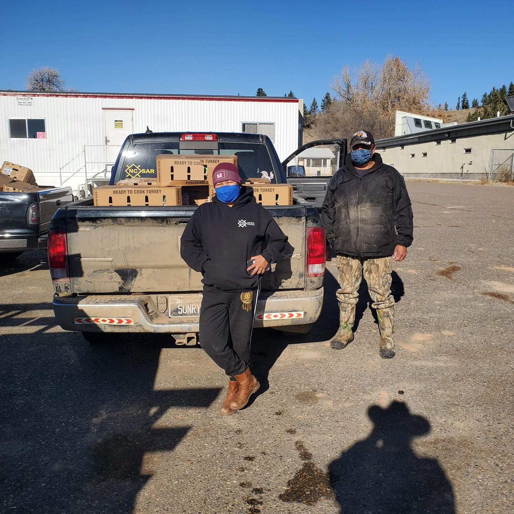
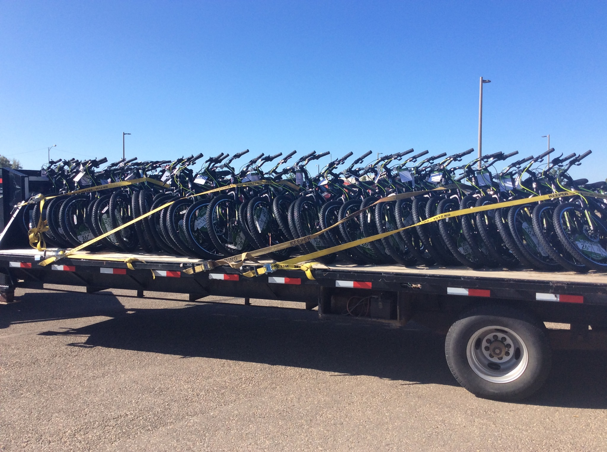
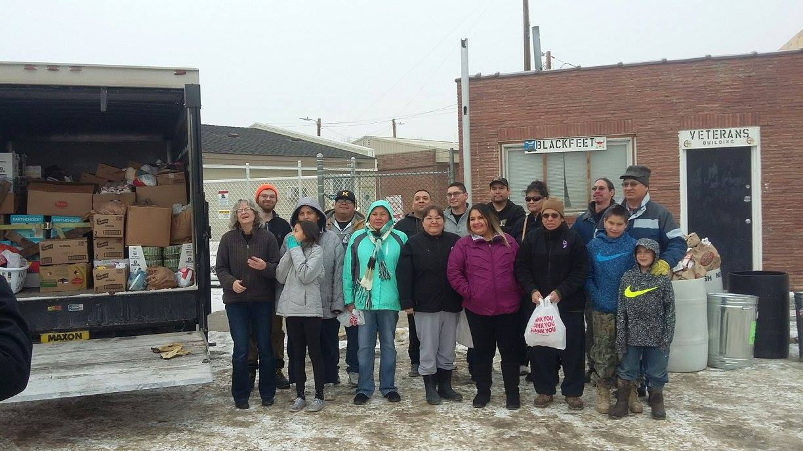
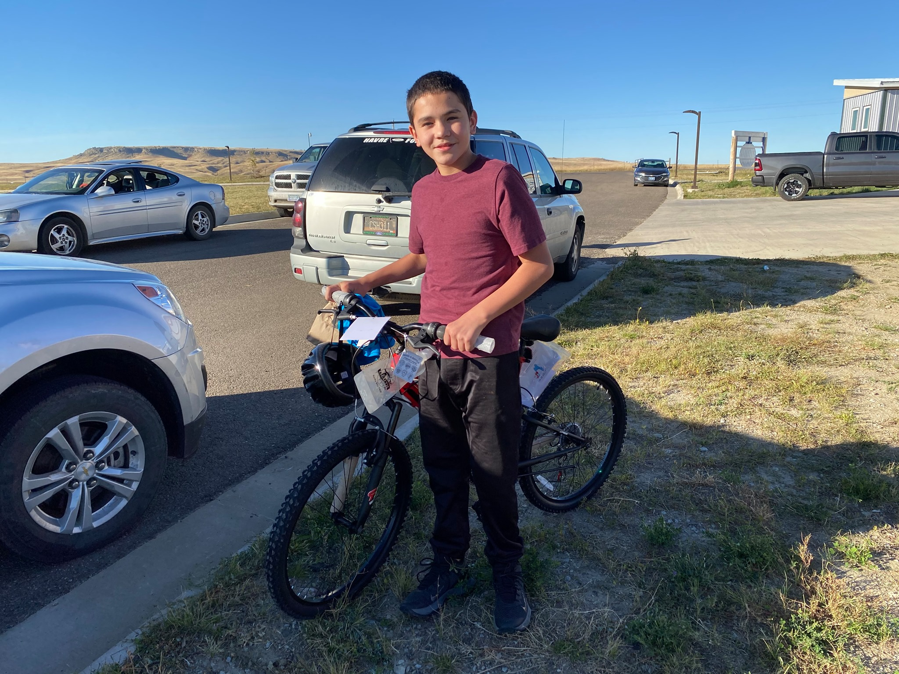

Continuing Holiday Distributions
As of December 2025, EED continues distributing holiday food boxes to Blackfeet families, with a target of 300 boxes for families in March 2026. The organization has distributed over 1,000 food boxes across Montana reservations for the holiday season.

Bike Program Expands Across Three Nations
Partnership with Rotary Club of Missoula for a single-day bike-building event hosted by Comfort Inn University Missoula, with a goal of 1,400 bikes for the year. The program now serves the Blackfeet Nation, Crow Nation (Lodge Grass), and Fort Belknap Reservation — totaling over 1,920 bikes distributed since 2018.

Bike Program Expands to Crow Nation
The Bikes for Indigenous Youth program expanded to the Crow Nation (Lodge Grass). Board member Samuel Enemy-Hunter, an enrolled Crow member, described bikes as a modern replacement for horses: "You're taking what we would have had as tribal people — horses — and replacing that with bikes so they can get around."

80+ Volunteers Statewide
EED's distributed volunteer network grew to over 80 volunteers statewide, sourced from tribal lands and Missoula alike. The organization delivered 63,000 pounds of food annually to families across multiple reservations, serving nearly 300 families per month in the Blackfeet outlying communities.

Montana Ag Network Feature
One of the earliest in-depth media profiles of EED's work, highlighting how the organization provides fresh food to Blackfeet Nation families and combats food insecurity across Montana's tribal lands.

501(c)(3) Tax-Exempt Status Granted
The IRS granted EED official 501(c)(3) tax-exempt status in June 2018. Bike donation program launched the same year with the Blackfeet Nation. Walmart partnership established for discounted bulk purchasing.

Essential Eats Distributors Founded
Founder Sara Wecker learned at a Missoula art show that a small food pantry serving families near the Blackfeet Nation had suddenly shut down before the holiday season. She quickly assembled a truckload of Christmas boxes — 75 to 100 boxes distributed in 15 minutes — and immediately recognized the scale of unmet need. Later that fall, she formalized the organization as a nonprofit, initially focused on Heart Butte on the Blackfeet Indian Reservation south of Browning — one of Montana's most geographically isolated communities.